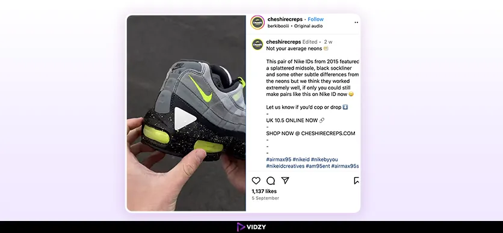
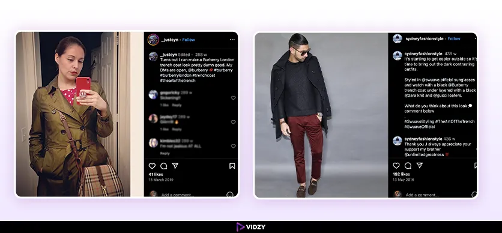
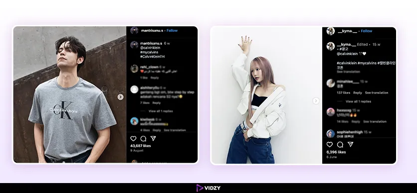
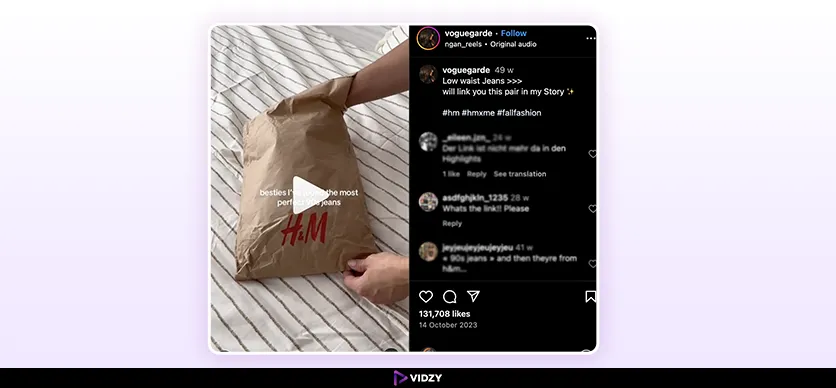

Fashion Brands like ASOS, H&M, and Zara use a real-life, in-person dressing experience to show you fashion items as you go about your daily activities. Why are fashion brands doing this? And What is this strategy? Well, Seeing the hike in their sales, the strategy is definitely working for them!
These fashion brands are using user-generated content to create better relationships with their target audience, develop confidence, and enhance sales through real user-generated stories.
These brands effectively utilize UGC, which can help to develop bonds between the customers and the brands in the form of trust and sales enhancement. By including a post that features images and videos of real customers using the product and honest reviews, they build up a body of evidence and a trusted "peer group" of consumers. The legitimacy of their words hits the marks that potential buyers are eager to get. Thus, when they see how these products are used by other people in real events, they decide to purchase these products.
This blog post explores how user-generated videos for fashion brands can revolutionize a fashion brand’s marketing strategy and increase the awareness of fashion brands as well as their credibility.
Let’s start with exploring the types of user-generated content for fashion brands that can be leveraged in their UGC marketing campaign which helps to build strong customer trust, community, authenticity, visibility, and sales.
Types of Fashion User-Generated Content
1. Fashion Haul Videos
One of the most popular types of UGC for fashion brands is fashion haul videos, which people use to display their recent purchases. In the videos, customers often display the clothes and accessories and express their opinions. Sometimes impressions are based on the functionality and other features, while other times, it is just how it looks or its brand. The actual recommendations and feedback from users, making the information more trustworthy. Hence, the trust of consumers towards the brand increases.
2. Styling And Outfit Inspiration
The styling and outfit inspiration videos are a great way for fashion brands to engage and communicate with their target audience. Where users share their videos displaying their styling of different clothes, and also they share their feedback which can be an interesting and multifaceted presentation of the brand's offering. Increasing user engagement through this UGC format in fashion marketing is a key way to promote a brand.
3. Lookbooks:
Lookbooks are other types of UGC for fashion brands where customers model your clothes in their unique style. They showcase how your products can be styled in different ways, providing inspiration for potential customers.
4. UGC Ads Video For Fashion Brands:
UGC Ads Videos is also one of the major types of UGC for Fashion Brands. The video must contain the latest customer ideas to make ads more effective, relevant, and personal. The UGC ads usually have higher click-through and conversion rates. The authenticity of relatable customer experiences help to develop credibility. Top fashions like Nykaa, H&M, and Puma use UGC content in their marketing campaigns to drive high conversions and ROI. Create sales-driven UGC ad campaigns for fashion brands.
5. Try-On And Review Videos
Try-on and review types of UGC for fashion brands are great for building trust. These videos are the best way to get a close look at how fashion items fit and feel. Shoppers can review them according to various criteria, such as material, comfort, and style.
6. Testimonial Videos
Testimonial videos on a website are product endorsements in a personal customer passage through the satisfaction derived from the products bought. These are short clips - recorded by these satisfied customers who are enthusiastic about their purchase. These videos, fashion brands increase the confidence of prospective customers towards the product and the brand.
7. Fashion Challenges And Trends
Fashion challenges and trends are great opportunities for brands to get involved more interactively and have fun with their customers. People filming themselves in such activities usually tops with the brand’s tag and their call to action, are common. These types of UGC for fashion brands are exciting and go viral which enhances the visibility and reach of the brand.
User-generated content videos are a crucial weapon to advertise fashion brands. By influencing the buyers to produce UGC, the brands can get hold of a lot of exciting content that can be utilized to promote their fashion brand. It allows the fashion brands to create a loyal customer base and boost sales. Now let’s explore the benefits of user-generated content for fashion brands.
Benefits Of UGC For Fashion Brands
The benefits of UGC for fashion brands go deeper than displaying products. It’s about developing trust, building loyalty, and building a unique brand experience that appeals to the audience at a more personal level with them.
Turning Consumers Into Trendsetters
The fear of missing out (FOMO) is largely caused by authenticity, which now plays a big role in shopping choices. When people observe friends or influencers adopting a trend, they want to get in on it. UGC capitalizes on this by portraying everyday people who are having fun and using the products. Any person on this virtual runway can act as a model, which results in regular consumers becoming influencers. People show their experiences and thus validate the trend which leads to a rise in participation from others, making UGC an important factor in the latest fashion trends.
UGC For Fashion Brands As A Trust Token
One of the prime benefits of UGC for fashion brands is that it provides genuine, unfiltered content. UGC for fashion brands is the authentic, firsthand shared perspective of brand customers, which acts as a token of trust in the online world. Genuine customer reviews are the priority for most consumers. They trust products that have a history of being used by clients more than they do with traditional advertising, as a result, UGC becomes a significant tool for brand reliability.
Cost-Effective UGC Content Creation For Fashion Brands
High-quality content cannot simply mean expensive content that takes a lot of time to get done. UGC for fashion brands is the best way for consumers to use their creativity, which is also the most cost-effective. As consumers or fans give their best by creating and sharing content, it also gives you a chance to have a massive amount of authentic material without costly content creation. As per Grynow Media, brands save an average of $72,000 spent on content creation due to UGC.
Increases Reach And Engagement of Your Fashion Brands
Fashion brands need to enhance their reach and engagement, and LinkedIn has found that user-shared content brings an 8 times higher engagement ratio compared to branded content. It illustrates how using users' networks is a powerful tool for promulgating a brand's message, especially when presented as more organic and related. Through customer-sharing content, brands can capture a wider audience, visibility, and active participation while rendering the latter even more excited.
Drives Higher Conversion Rates For Fashion Brands
Another benefit of UGC for fashion brands is - it contributes to the increase in conversion rates. UGC for fashion is a proven way to establish customers' trust in brands, it allows customers to share authentic experiences with fashion products that hook new customers to rely on fashion brand’s products. It has been observed that people who see others already using a product are more likely to convert it. UGC helps potential fashion customers transition from the decision-making stage to purchase by getting the right message across and tapping into the consumers' wishes and dreams.
All the benefits of UGC for fashion brands are described above. By utilizing the inventiveness and genuineness of customers, you can build a promotional plan. It is flexible enough to create a brand image that differentiates it from competitors in the cut-throat fashion realm.
Why User-Generated Content For Fashion Brands Is A Game-Changer?
UGC for fashion brands has become the game changer in the fashion industry, altering how companies engage buyers, build trust and generate revenue. To represent users' experiences and the tendency to trust fashion products, UGC provides marketers with the most powerful tool available for fashion brands to expand their audience by meaningfully engaging them because UGC content encourages consumers to create authentic content (like product review and ratings)that expresses their feedback with the brand’s fashion products.
It is no longer seen merely as a marketing gimmick, but UGC for fashion brands is truly a sales force, as its power to affect consumers' purchasing decisions cannot be denied.
Grynow Media's data highlights that a considerable 66% of consumers depend on reviews and testimonials when they are purchasing clothes or accessories. This particular figure emphasizes the impact UGC has on user buying decisions. As per Grynow Media - the footwear industry is a specific area of this reliance contributing 85% of customers ensuring the presence of reviews before making a purchase. These figures point to the dominance of UGC in the fashion world and demonstrate that it is more a compulsion than an option for brands to develop their businesses.
What makes user-generated content (UGC) so powerful is its ability to create a sense of community and trust around a brand. When consumers see real people wearing and enjoying a brand’s products, it creates a ripple effect. This content is perceived as more authentic and trustworthy than traditional advertising because it comes from fellow consumers rather than the brand itself. As a result, UGC for fashion brands has the unique ability to turn satisfied customers into brand ambassadors, who inspire others to follow suit.
In addition, UGC for fashion brands provides an innovative manner to depict how products integrate into the lives of ordinary people, giving credence to different opinions and styles, which bridges a wide audience gap. It looks like a never-ending fashion parade where every customer is a modal, and each post, review, or image communicates the brand's story. Such organic content generated by users is a way of boosting engagement and a source of information for directing conversions. Additionally, it is a tool to provide potential customers with the required social verification for informed decision-making.
UGC for fashion brands is a catchword and a transformative factor. The authentic and user-oriented nature of UGC is the basic fact that drives fashion brands to establish close connections with their potential audience, enhance brand credibility, and give the ultimate sales push. As consumers increasingly draw on recommendations and testimonials for trust, UGC is still going to be the crucial tactic in the bag of tricks for any successful fashion marketing campaign.
Here is a detailed description of how UGC is beneficial for fashion brands to grow and boost revenue.
Successful UGC Campaigns Of Fashion Brands
Here, the successful UGC examples of such campaigns are evidence of the influence of the UGC on brand building and the resultant sales, as well as the development of a strong community of fashion enthusiasts.
1. Nike
Campaign: #NikeID

Nike has introduced a marketing strategy with the #NikeID. It supports customers in customizing their shoes and uploading them to social networks. This project contributed perfectly to customer engagement as consumers can show off their unique designs. Through real users' designs, Nike made a line of products appear more social and authentic. The example of UGC content for fashion brands gave the label a face on social media to score main points in the sales arena. Here, the clients were enticed with the possibility to design their shoes in a personalized way.
2. Burberry
Campaign: The Art of the Trench

Consider The Art of the Trench the best UGC campaign for fashion brands. The campaign which calls for customers to show their pictures wearing the brand's iconic trench coat was launched by Burberry. The customer-led campaign turned a wide range of stylish photos into the provision of a large, beautiful gallery on Burberry's webspace as well as the personal pages of the participants. The promotion of the campaign developed the brand into a highly sought-after item in the market and brought more sales and customer engagement to Burberry, as the clients became more inspired by the actions of the real-life spokesmen for fashion.
3. Calvin Klein
Campaign: #MyCalvins

The Hashtag My Calvins campaign implemented by Calvin Klein was supreme, customer involvement was growing each day by being involved in the campaign. This campaign also generated tons of authentic catchphrases that visually present the brand and its products in real-life scenarios. The campaign brought many new consumers to the business and increased sales because people sensed unity with the shared global community of Calvin Klein wearers.
4. H&M
Campaign: #HMxME

The #HMxME campaign entices customers to express their styles with H&M garments. It showcased handpicked photos on its website and social media, thus creating a fun, and diverse fashion community that was connected. This project increased customer interaction, therefore the revenue, as authentic fashion inspiration by customers utilizing their peers was the main motivating factor. Thus #HMxME is also a remarkable example of UGC content for fashion brands.
Effective Strategies: How To Collect UGC Content For Fashion Brands?
The fast-evolving fashion industry requires brands with different ideas to attract potential clients and stay ahead of their competitors. The best among these initiatives is user-generated content - an effective means to achieve genuineness, create connections, and improve sales.
Here is how fashion brands can collect UGC content to strengthen their growth and develop trust-based interactions with their customers.
Leverage Authenticity UGC Stories:
UGC for fashion brands should be the most essential way to decorate the website. For this, regularly place the authentic UGC stories on your fashion brand’s website to build trust and inspire the customers by showcasing the customer's photos and testimonials. Build a wall of fame that includes UGC in your social media, email campaigns, and ads to make customers feel like they are dealing with real, authentic brands. This is the best way to boost sales and get more people to spread.
Create A Community:
To engage with customers who have delivered the UGC content for fashion brands, you can organize virtual styling sessions and Q&A events to connect them. In these activities, clients can get led through.
Provide Guidelines For Content Creation:
Let your preferences or seasonal themes be the source of your inspiration while establishing a common visual language with the fashion brand. Your contributors should be prompted to submit images that are easily visible and are in the right light, To highlight the most original ones to serve as examples for all the future ones.
Incorporate UGC into Product Development:
Monitor UGC for feedback on fit, comfort, and style to guide product improvements and future collections. Invite loyal customers to help in the designing process by voting hue or suggesting attributes for upcoming products.
Pro Tip To Create Sales-Driven UGC For Fashion Brands
Fashion brands can employ UGC as a tool to reinforce their brand image and sales, by connecting a quite remarkable UGC agency like Vidzy.
Vidzy’s grand specialty is tuning a UGC campaign to elevate fashion brands through the true voices of customers - the co-creators of a brand’s identity. The UGC agency helps the fashion industry create influential and engaging user-generated content that directly speaks to the niche audience, backing the brands with credibility and forging strong relationships.
The UGC agency’s marketing model is increasing brand visibility, and fostering a community environment around the brand which is essential for long-term brand loyalty. Certainly, fashion brands can be assured of increasing sales and brand trust by collaborating with Vidzy!
Conclusion
The user-centric content is for fashion brands to induce credibility and drive sales on Social Media networks. UGC for fashion brands is the use of the real-life experiences of customers, making the brand more human, relatable, and credible.
UGC content extends the credibility of the brand and energizes a bond among the clients who are passionate about your product, which in turn elicits more audience participation and loyalty. Fashion brands can creatively utilize the ideas of their audience, and widen the customer base.
Given the rapidly changing fashion industry, the success of modern consumer engagement depends on the adoption of UGC by brands that aim to connect with customers.